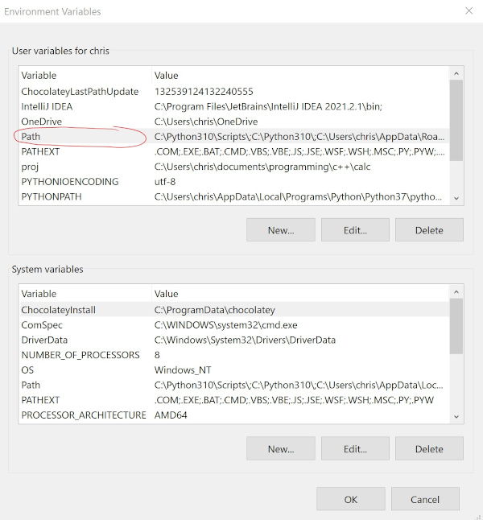

how to edit PATH in Windows
Environment variables such as PATH help organize computers to make important apps and files easier to access.
- Press the Windows key.
- Type
pathand press enter. - In the window that pops up, go to the Advanced tab.
- Click
Environment Variables. - In the user variables (the top box; see below), select the row that has "Path" in the left column.

- Click
Edit. - Click
New. - Click
Browse. - Select the file or folder you want to add to PATH.
- Click
OKon each of the new windows. - There's a chance you will need to restart for the change to take effect.